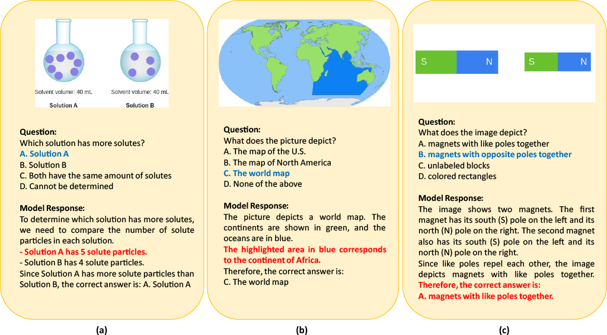
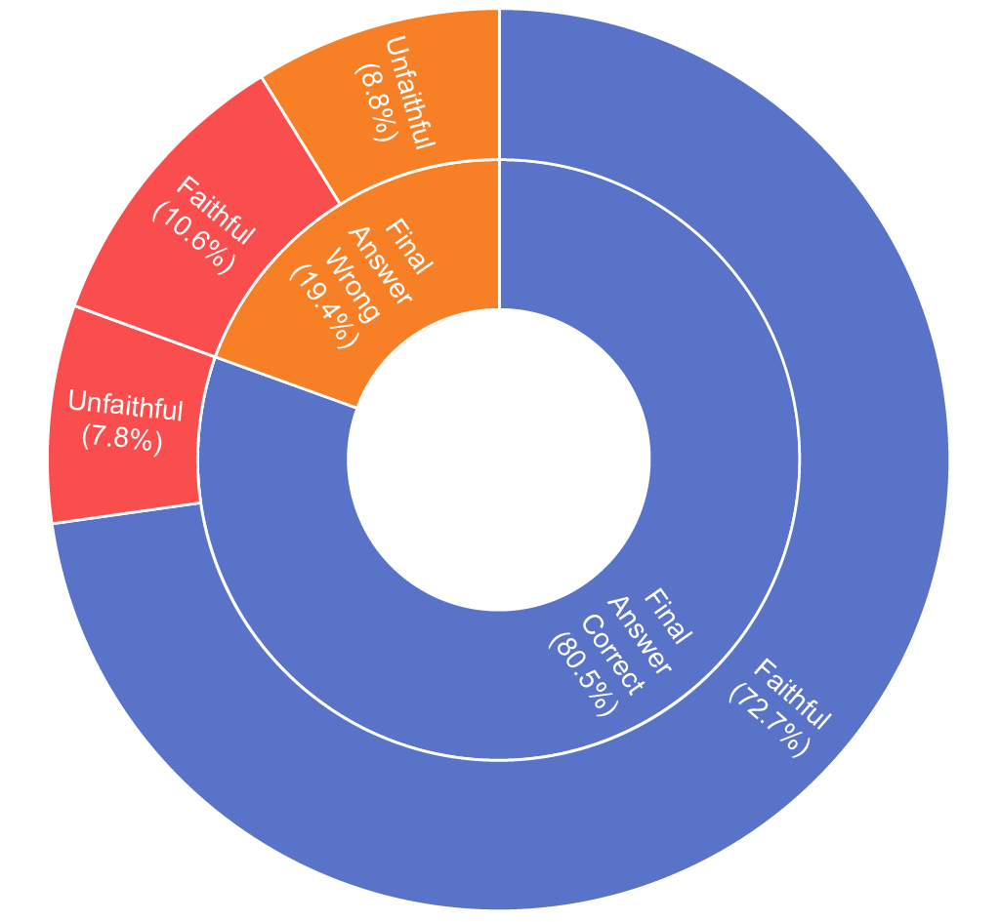
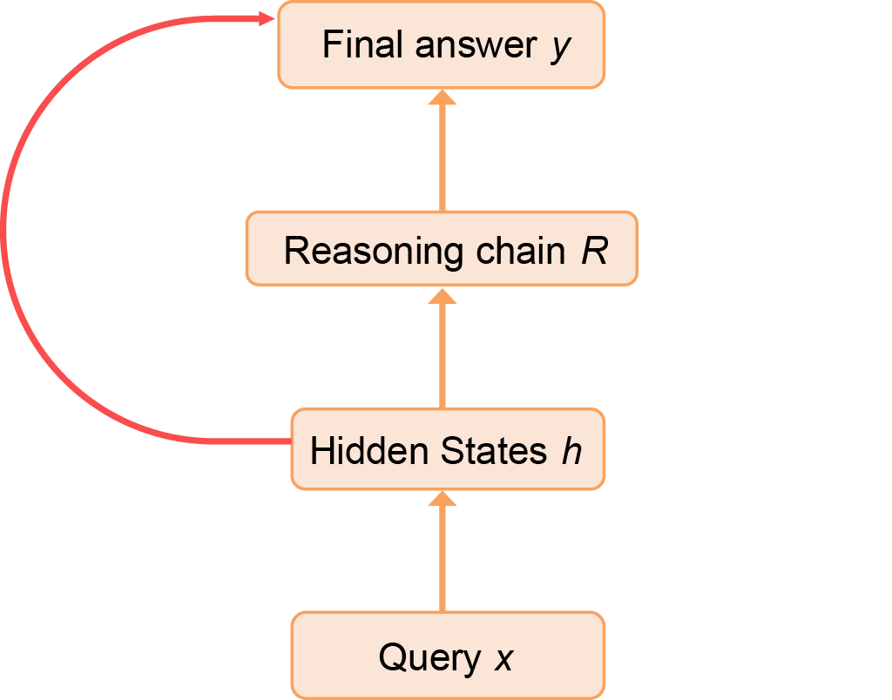
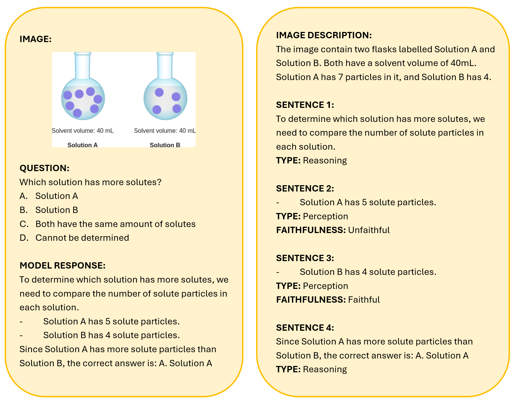
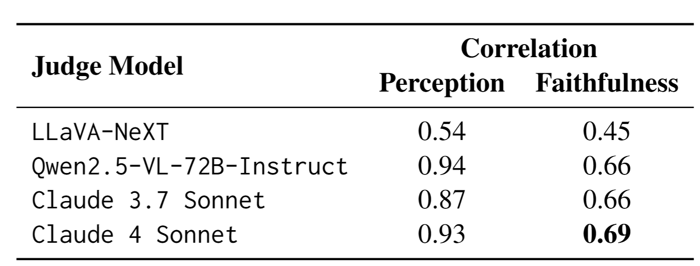
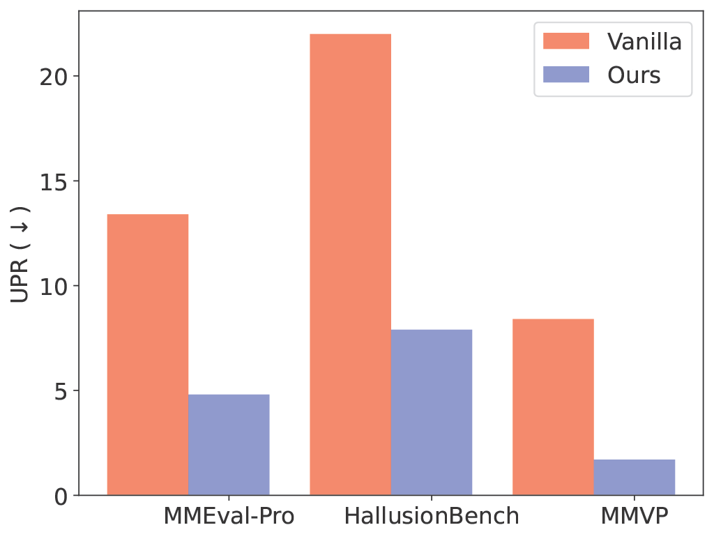
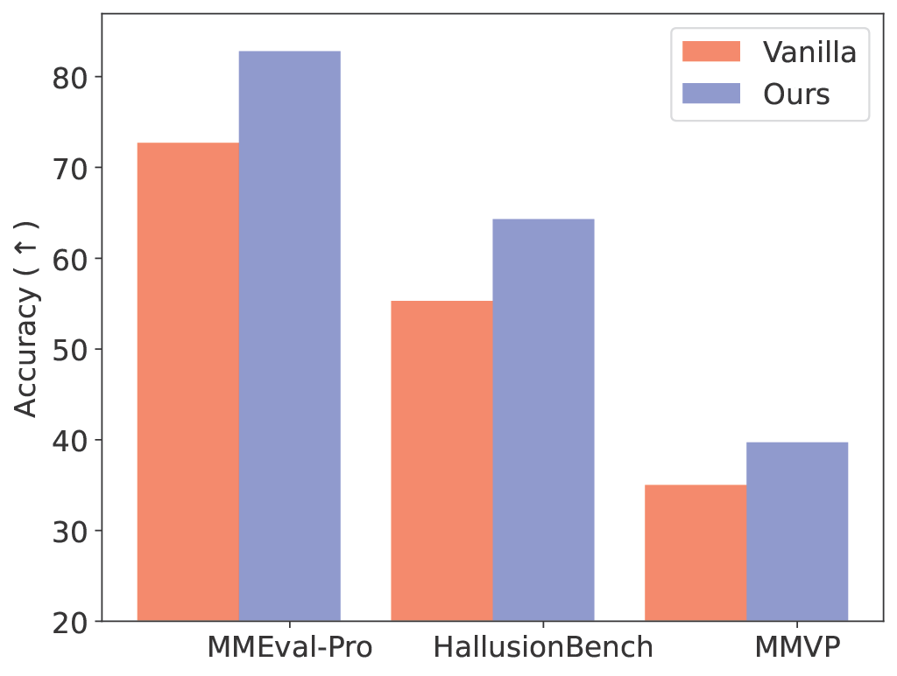

Reasoning-augmented vision–language models (VLMs) promise transparency by revealing not just their answers, but the steps used to reach them. Yet this transparency can be deceptive. As shown in Figure 1, a model may produce the correct final answer while its intermediate reasoning invents visual details that never appeared in the image - a lack of visual faithfulness. Conversely, a model may faithfully describe what it sees, yet still arrive at the wrong conclusion due to errors purely in logic.
This reveals a deeper issue: current evaluation for VLMs test how well the model "sees" an image by measuring final answer accuracy on perception based questions. But in Figure 2, we highlight that this can be misleading - final accuracy and reasoning faithfulness diverge sharply, and in many examples the model appears to “solve” the question without relying on its own stated reasoning.


Rather than relying on special detectors or handcrafted rules that could potentially generalize poorly, we test a very straightforward approach first - using an off-the-shelf VLM as a judge, and evaluating each step independently.
The judge first breaks down the model answer into steps, and then determines whether a step is a Perception step (describing visual content) or a Reasoning step (drawing inferences). For all Perception steps, it then evaluates the visual faithfulness. An example is illustrated in Figure 4.

This approach design aligns closely with human annotation, and the paper’s human correlation study shows that a strong VLM judge—such as Claude 4 Sonnet—tracks human ratings with high reliability.

How does this compare to using the answer generating model itself? Compared to having the generating model assess its own reasoning, an external judge is far more capable (more details in our paper). Models are notoriously overconfident about their own outputs and often reproduce their own hallucinations instead of flagging them. External judging provides the objectivity needed for evaluation at scale.
Once we can detect unfaithful perception steps, the next question is how to fix them. We frame this as a when + how problem.
Why this framing? The reasoning chains produced by modern VLMs are long and interleave perception steps with logical reasoning steps. Intervening everywhere would potentially disrupt the logical reasoning steps of generation (they aren't intended to look at the image, and forcing the model to reference the image at this point may worsen reasoning ability), while intervening too rarely leaves hallucinations untouched. The key insight is that interventions should occur only when an unfaithful perception step is detected, ensuring the model is corrected precisely at the point where its grounding fails.
The "when" method is a simple off the shelf VLM detector. We use Claude 3.7 Sonnet, and show simply prompting this model is significantly stronger than using trained detectors that utilize the generating VLM's internal states.
The “how” is a lightweight self-reflection mechanism. When the detector identifies an unfaithful step, the model is prompted to regenerate only that step with explicit instructions to examine the image more carefully. If the revision is faithful, the reasoning chain generation continues onward from the corrected point; if not, the regeneration is repeated up to a small retry limit. This keeps the corrections local, preserving most of the chain while improving grounding exactly where needed.


The results in Figure 5 demonstrate large improvements in visual grounding (measured as lower Unfaithful Perception Rate, UPR) across multiple benchmarks and datasets. Interestingly, accuracy on the final answers also improves in many cases. Strengthening intermediate perception helps the model reason better overall, indicating that faithful grounding is not just about interpretability—it also benefits task performance.
Overall, we see this work as an intial step: the main goal was to clearly surface the problem and offer an initial toolkit, and we hope it encourages the community to explore stronger, more practical ways to make multimodal reasoning truly faithful.